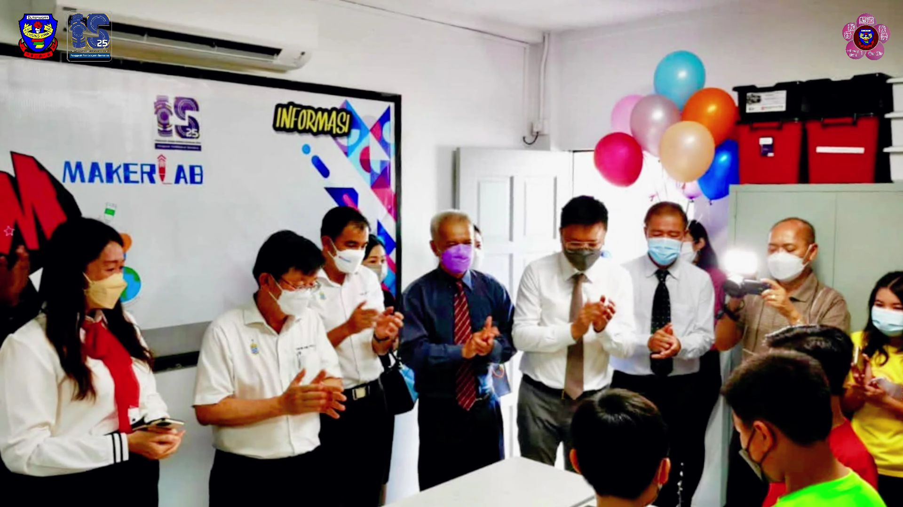
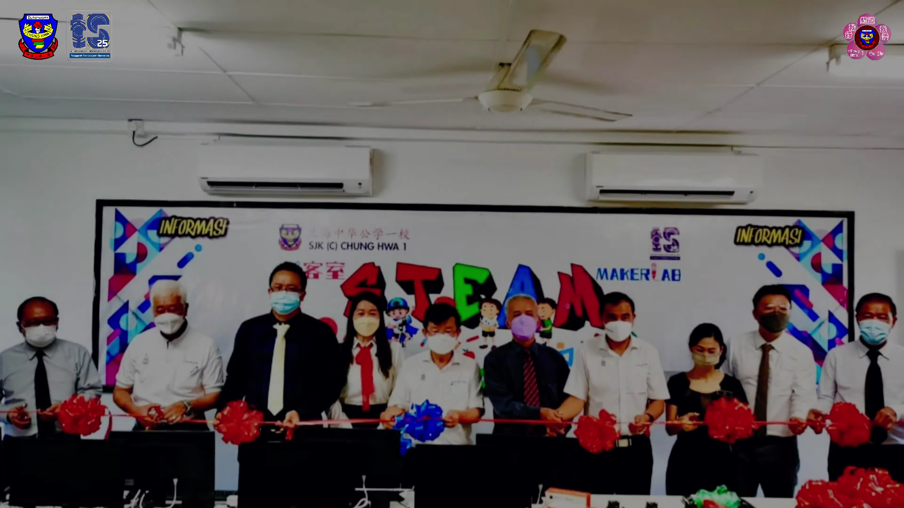
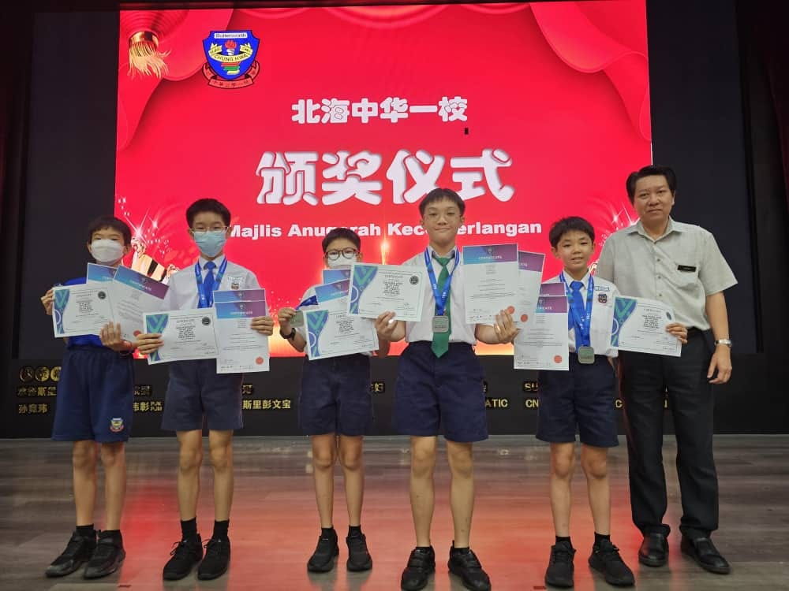
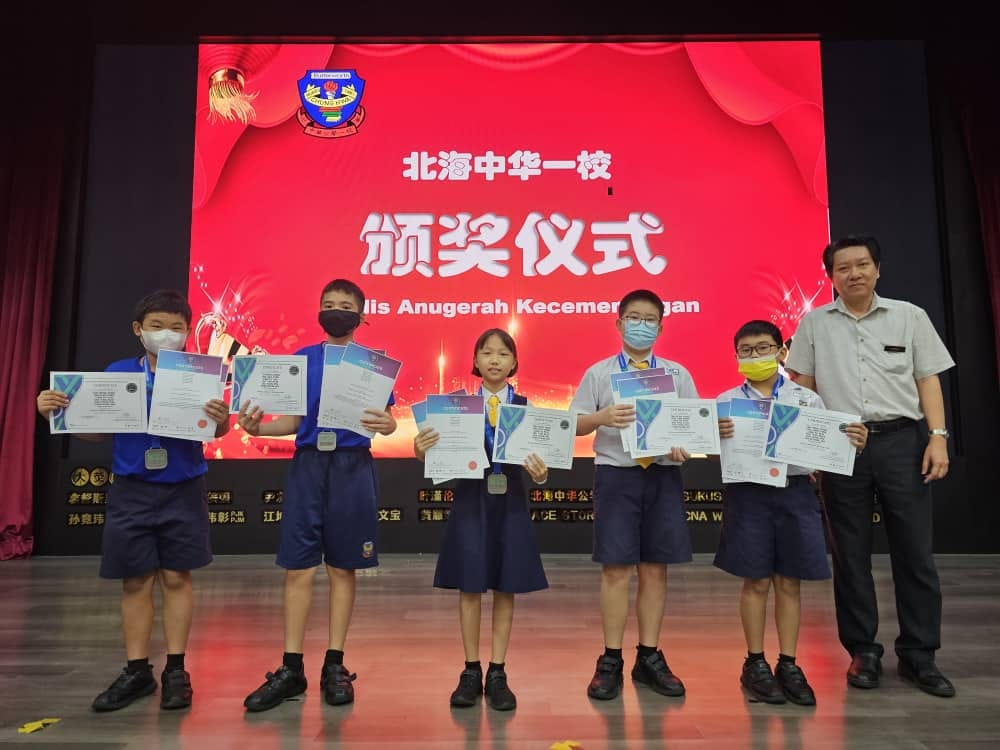
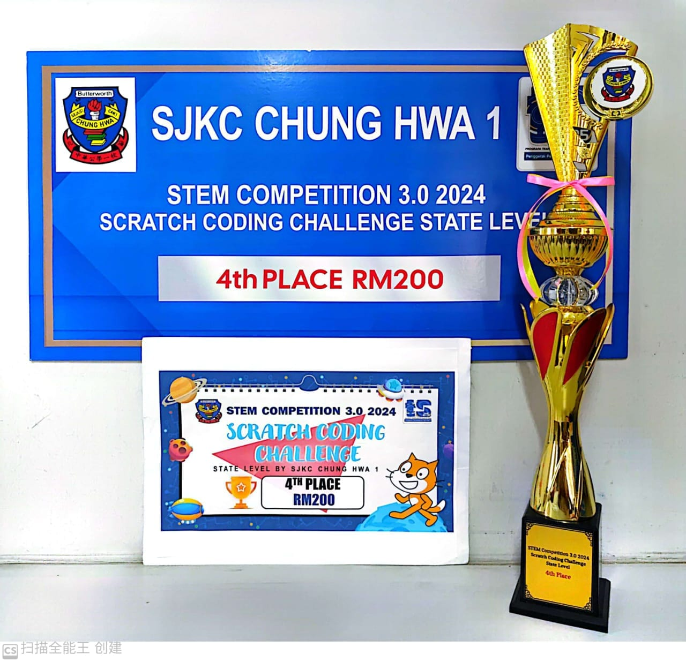
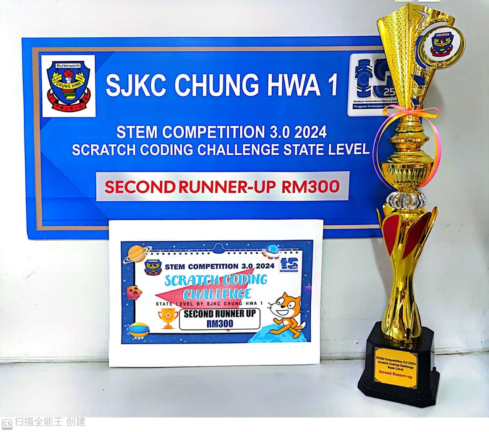
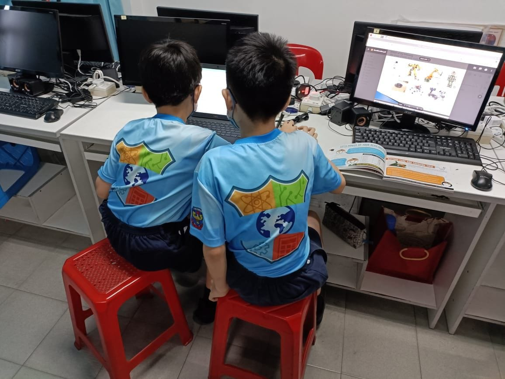
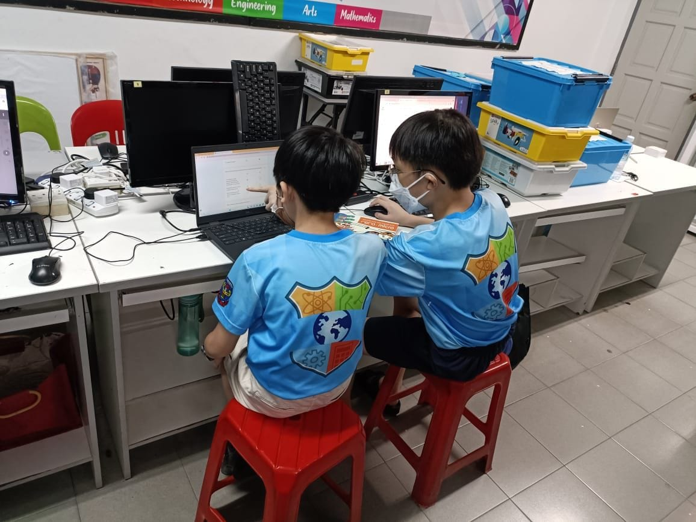

Stem School Team And Maker Lab


- Makerlab was established in 2022. Our School Team started on 21 April 2022. There are 40 computers and 5 laptops.


- Students achieve lots of achievements in stem like NRC Competition, RAC Competition, Coolest Project Malaysia, Scratch Competition, Microbit Competition, etc.


- Our school also organized some coding competitions in Makerlab. We invited all schools in Penang to participate in competitions like Scratch Competition and Microbit Competition.


- Students can learn a lot about science and mathematics, increase their innovative thinking, inspire creativity, etc. By participating in some projects, students can learn lots of knowledge and fulfill their teamwork with team members.
- Our teachers also teach a lot of robotic classes such as microbit class, arduino class, scratch class and many others to increase our school students' standards in STEM.
- All of all, STEM is a very fascinating activity that is encouraged to participate in. By participating in STEM, students will be more interested in Science and Mathematics.